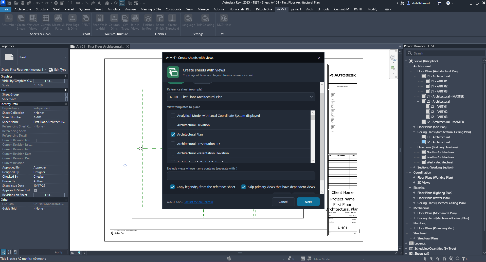
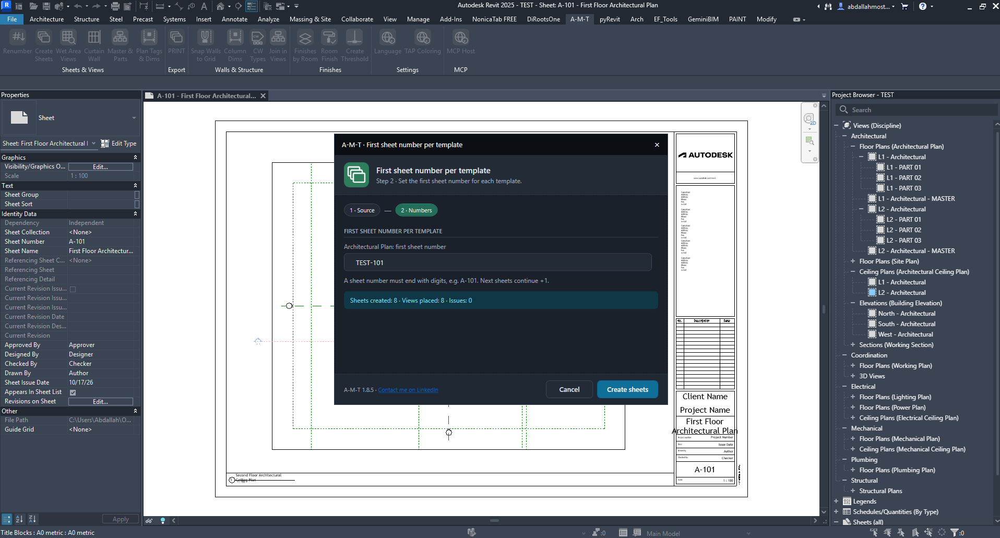
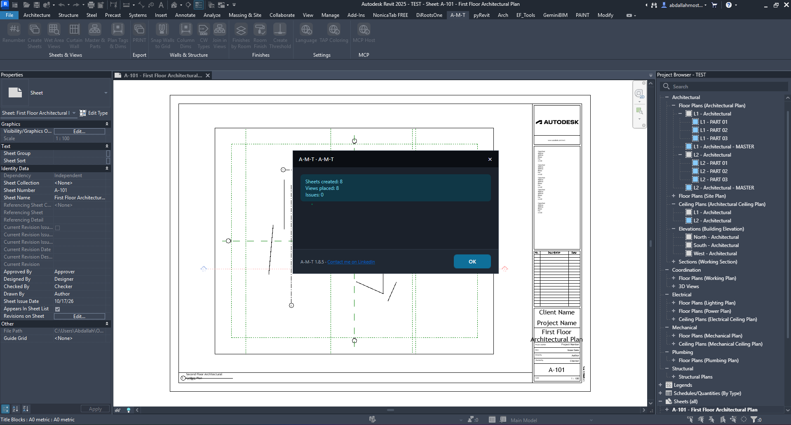
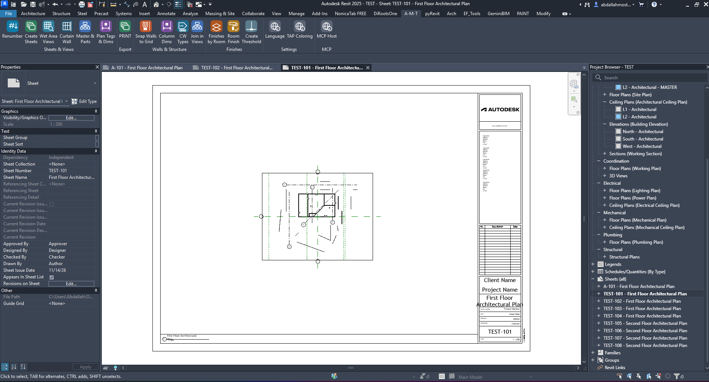

Create Sheets
Generate sheets from selected Revit view templates while reusing the layout of a reference sheet. Configure the source, choose the views to create, assign the first sheet number for each template, and review the generated sheets.
How the command works
Create Sheets follows a two-stage setup, then builds the sheets and places the matching views.
1. Choose the reference sheet and view templates
Start by defining the sheet layout to reuse and the types of views that should be generated.
Select the source and target views
The first stage of the dialog controls which sheet is used as the layout reference and which view templates are included.
- Reference sheet — select an existing sheet to use as the example layout.
- View templates to place — select one or more templates, such as Architectural Plan, Architectural Elevation, or other available templates in the project.
- Exclude views whose name contains — optionally enter words to skip views whose names contain those terms. Separate multiple terms with a semicolon.

2. Configure the sheet layout options
Choose which parts of the reference sheet should be reused and how dependent views are handled.
Copy legend(s) from the reference sheet
When enabled, legends placed on the reference sheet are copied to the newly created sheets.
Skip primary views that have dependent views
When enabled, primary views that have dependent views are skipped by the command instead of being processed as regular primary views.
Exclude views whose name contains
Use this optional field to exclude views by words in their names. Enter multiple terms separated with a semicolon.
Next
Continue to the sheet-number assignment stage after selecting the reference sheet, templates, and options.
3. Set the first sheet number for each template
Assign a starting sheet number to each selected template before creating the sheets.
Enter the starting number
The second stage lists the selected view templates and provides a field for the first sheet number associated with each one.
- Source / Numbers — the progress indicators show the two stages of setup, with Numbers active in this screen.
- First sheet number per template — enter the first sheet number for each listed template.
- Number format — the sheet number must end with digits. The dialog gives A-101 as an example and states that subsequent sheets continue with +1.

4. Create the sheets
Confirm the starting numbers and run the command to generate sheets and place their views.
Create Sheets
Starts sheet creation using the selected reference sheet, view templates, options, and starting numbers.
Cancel
Closes the dialog without proceeding with sheet creation.
Before clicking Create Sheets, check that each template has the intended first sheet number and that the number ends with digits so the sequence can continue.
5. Review the creation report
The completion message summarizes the number of sheets and views created and reports any issues.
Understand the result
Sheets created
Number of new sheets generated by the command.
Views placed
Number of views successfully placed on the generated sheets.
Issues
Count of issues reported during the operation. Review this value after every run.

6. Check the generated sheets in Revit
After closing the completion message, inspect the new sheets and confirm that views have been placed as expected.

What to verify
- Confirm the new sheets appear in the Project Browser.
- Check that the sheet numbers follow the intended sequence.
- Open representative sheets and verify the view placement and reused layout.
- Check the completion report for any issues that may need attention.
Watch Create Sheets in Action
Follow the command workflow inside Autodesk Revit.
Run the command
A final checklist before using Create Sheets in your project.
- Prepare an existing reference sheet with the layout you want to reuse.
- Open Create Sheets from the A-M-T ribbon.
- Select the reference sheet and the view templates to process.
- Set the optional exclusion and legend/dependent-view options.
- Click Next and enter the first sheet number for each template.
- Click Create Sheets, then review the completion report and inspect the generated sheets.